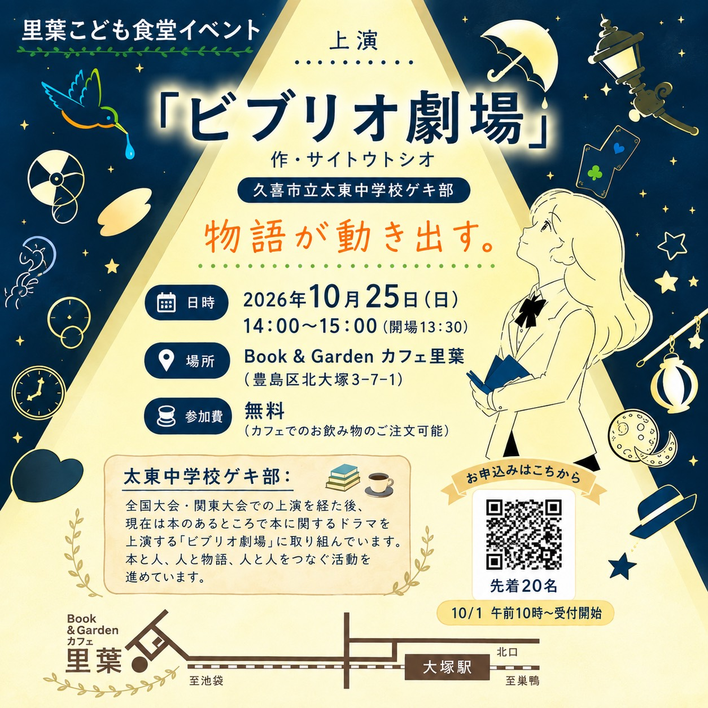

これからの上演
ビブリオ劇場 in カフェ里葉

約2年ぶりに、久喜市立太東中学校ゲキ部がカフェ里葉に登場します。本に囲まれた空間で、中学生の感性から立ち上がる物語の世界をお楽しみください。
- 日時
- 2026年10月25日（日）14:00〜15:00（開場13:30）
- 会場
- Book & Garden カフェ里葉（東京都豊島区北大塚3-7-1）
- 参加費
- 無料（カフェでのお飲み物のご注文も可能です）
- 作
- サイトウトシオ
- 上演
- 久喜市立太東中学校ゲキ部
上演内容
「ビブリオ劇場」は、本のある場所を舞台に、本の魅力を演劇で伝える取組です。今回は二つのスタイルで本の世界をお届けします。
- 絵本ドラマリーディング：絵本の言葉と絵を大切にしながら、声と身体で物語を表現します。
- ビブリオスキット：本の魅力を紹介する短い劇を上演します。
お申込み
10月1日（木）午前10時から受付開始。先着順です。フライヤーにあるQRコードからメールでお申し込みください。担当者から返信いたします。
フライヤーを大きく見る →久喜市立太東中学校ゲキ部
全国大会・関東大会での上演を経て、現在は本のある場所で本に関するドラマを上演する「ビブリオ劇場」に取り組んでいます。本と人、人と物語、人と人をつなぐ活動を進めています。